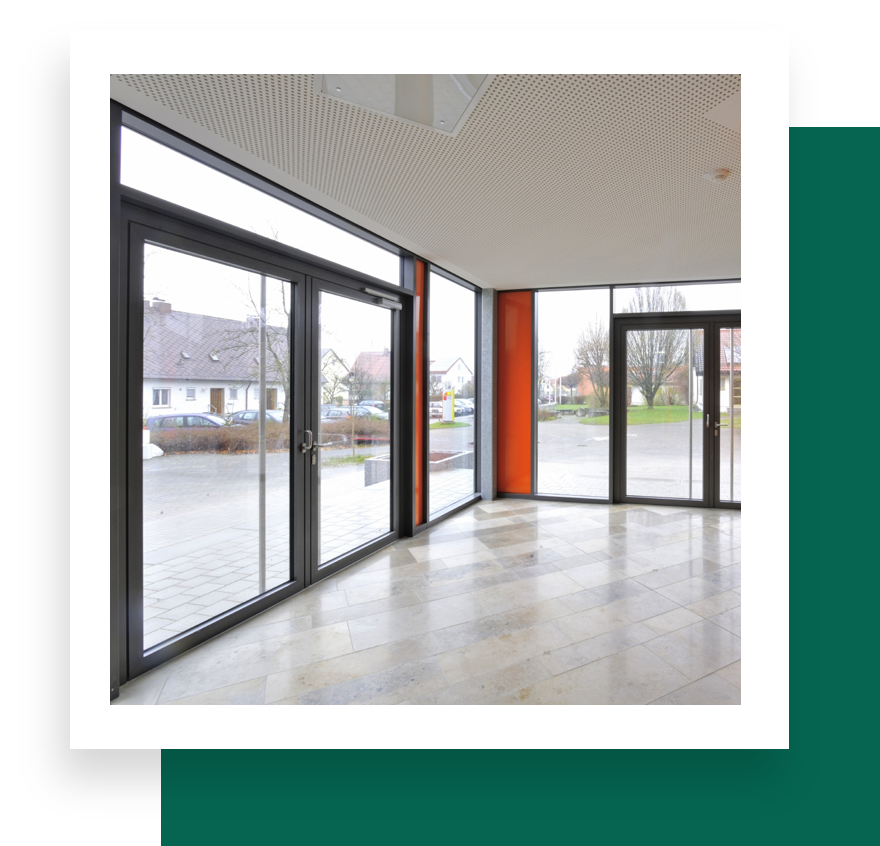
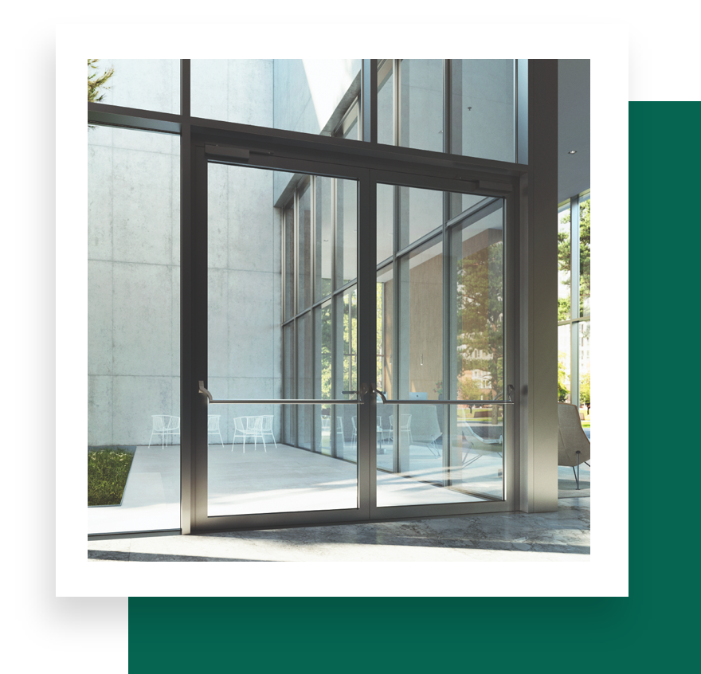

Janisol 2
Comprehensive fire protection system designed for doors and fixed glazing structures. Combining stringent safety standards with unmatched design flexibility.

Janisol C4
Seamlessly combines high-security features with refined design in a steel fire protection system. This door and fixed glazing solution meets top-tier safety standards while satisfying contemporary aesthetic demands.

Jansen Economy
Versatile solution for fire-resistant glazing and protection barriers in interior spaces, meeting strict standards while ensuring transparency and safety.

Janisol VISS Fire
Flexible steel profiles across various fire-resistance classes, ensuring both aesthetics and security in attractive façades — seamlessly integrating with standard VISS systems.